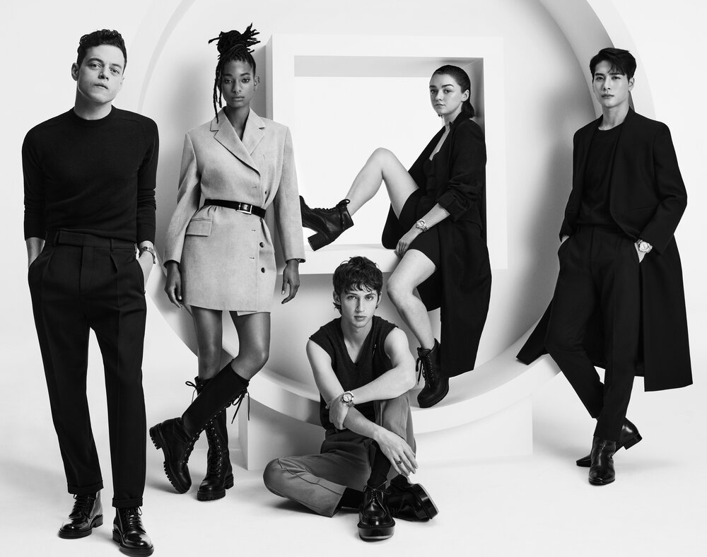

Lantern Festival The 15th day of the first lunar month is a traditional Chinese festival, the Lantern Festival.
The first month is the first month, the ancients called the night "xiao", and the fifteenth is the first full moon night of the year, so the fifteenth of the first month is called the Lantern Festival, also known as the "Shangyuan Festival.
" According to Chinese folk traditions, on the festive night of the renewal of the first yuan and the rejuvenation of the earth, the sky is bright and the moon is high, and there are thousands of colorful lanterns on the ground. People watch lanterns,
guess lantern riddles, eat Lantern Festival and have a family reunion. New Year's Eve New Year's Eve, also known as "New Year's Eve". This day is a day for people to eat, drink, play and have fun. The northerners make dumplings and the southerners make rice cakes.
The shape of dumplings resembles "Yuanbao" and the sound of rice cakes resembles "Nian Gao", both of which are good auspicious signs. On New Year's Eve, the whole family had a "reunion dinner" together, and it was like a family reunion for the New Year. When eating a reunion dinner,
the "fish" on the table cannot be moved, because this fish represents "wealth" and "surplus year after year" and symbolizes the "wealth and luck" of the coming year. It is a kind of decoration and cannot be touched. According to legend, in ancient times, our ancestors were threatened by the most ferocious beast called Nian.
People have struggled with "Nian" for many years. People have discovered that "Nian" is afraid of three things: red color, fire light, and sound. So on a winter night, people hung red peach boards on their doors, burned a fire at the door, stayed up all night at night, knocked and beaten, scared "Nian" back to the mountains and never dared to come out again.
As the night passed, people congratulated each other and celebrated their victory. To commemorate this victory, every winter at this time in the future, every family will put red paper couplets on their doors, light lanterns, beat gongs and drums, set off firecrackers and fireworks; at night, stay vigil all night; the next day, early in the morning, congratulate each other and congratulate each other.
Passed down from generation to generation, it becomes the "New Year".